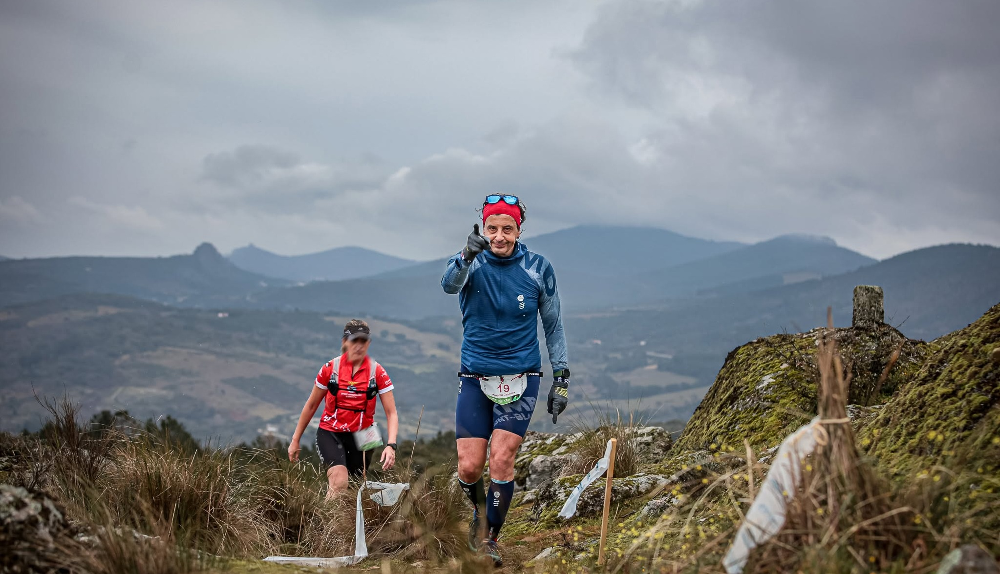
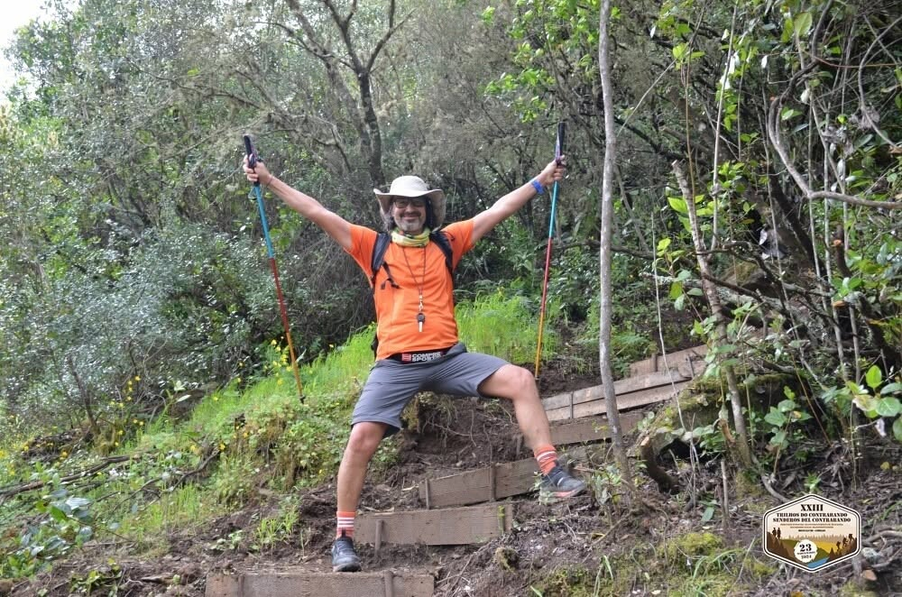

O trail running é muito mais do que apenas correr; é uma experiência de imersão total na natureza selvagem. Os atletas enfrentam terrenos irregulares, subidas íngremes e descidas técnicas que exigem não só resistência física, mas também uma agilidade mental constante para escolher o melhor caminho entre pedras e raízes. Esta modalidade promove uma ligação profunda com o meio ambiente e a Natureza, onde o silêncio da montanha é apenas interrompido pelo som da respiração e dos passos. É um desafio de superação pessoal que atrai cada vez mais entusiastas que procuram fugir do stress urbano e testar os seus limites em cenários deslumbrantes.

Trail running... O gajo no cimo da montanha.
A caminhada na natureza, ou trekking, oferece uma perspetiva diferente, focada na observação e na apreciação detalhada da biodiversidade. Caminhar por trilhos permite-nos abrandar o ritmo, respirar o ar puro das florestas e observar a fauna e flora que muitas vezes passam despercebidas. É uma atividade inclusiva, adequada a várias idades e níveis de condição física, que traz benefícios comprovados para a saúde mental e cardiovascular. Ao percorrer caminhos ancestrais ou trilhos marcados, o caminhante estabelece um diálogo com a paisagem, aprendendo a respeitar o ecossistema e encontrando uma paz interior que só o contacto direto com o mundo natural pode proporcionar de forma tão plena.

Trekking... O gajo no baixo da montanha.
Saiba mais sobre os melhores trilhos em: Visit Portugal
| Evento | Dificuldade |
|---|---|
| Trilho dos Reis | Moderada |
| Ultra Montanha | Difícil |
| Caminhada Familiar da Serra | Fácil |
| Vertical Kilometer Challenge | Extrema |